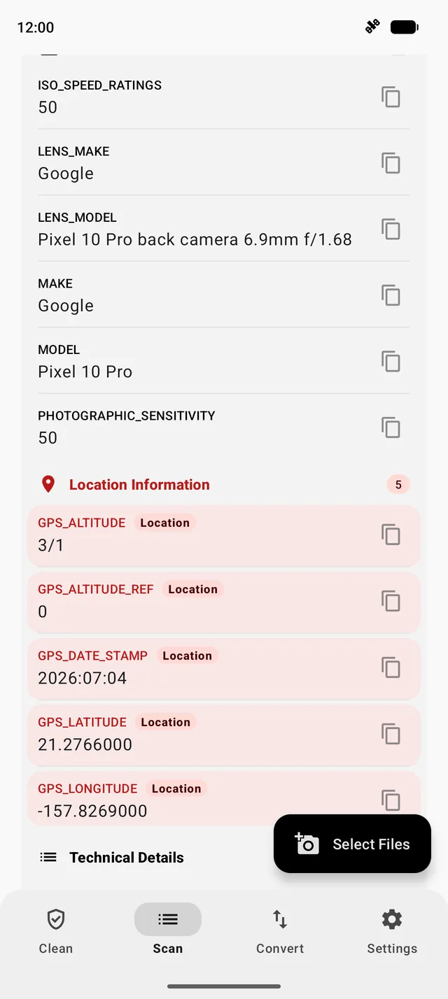
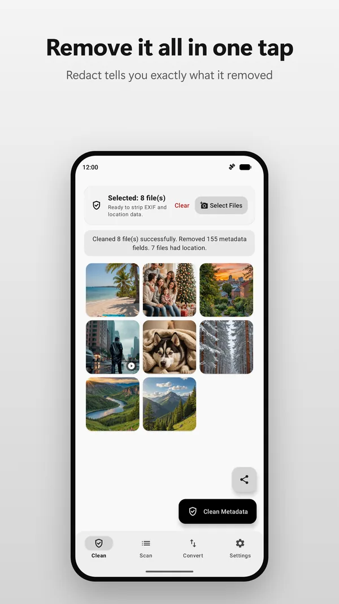
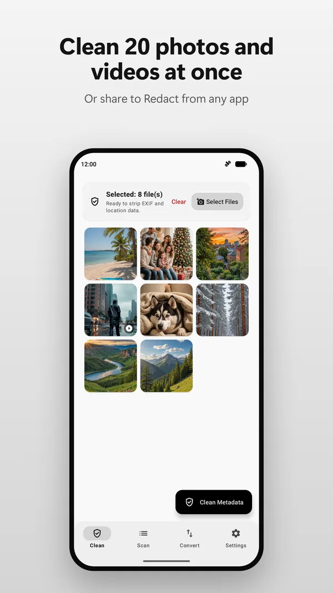
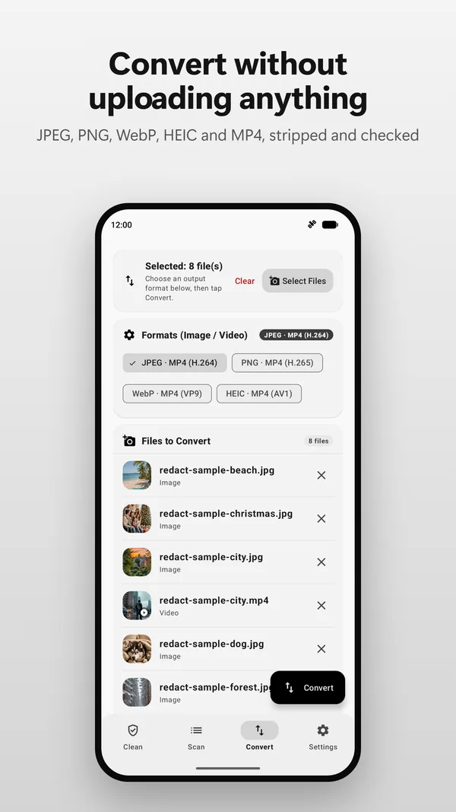

Your photos can reveal where you live
Every photo your phone takes can carry its exact GPS location, the date and time, and your phone's make and model. Redact shows you what a photo or video gives away, and removes it before you share, entirely on your Android phone.

See it, remove it, share it
Scan
Open any photo or video and see every hidden field in a clear, searchable list. Anything that shows where it was taken gets a Location badge.
Clean
Clean up to 100 photos and videos at once. Redact removes GPS, device details, timestamps, XMP, IPTC, comments and video tags, plus extra preview images and Motion Photo clips hidden after the picture, then tells you exactly what it removed.
Share safely
Share a photo to Redact from any app. It cleans the file and hands it straight back to the share sheet, so the clean copy is the one you send.



Who it's for
- Selling online. A photo of the thing you're selling, taken at home, can point straight to your address. How to sell online without giving away where you live.
- Dating and meeting new people. Send photos without sending your location.
- Parents. Share pictures of your kids, your home and your car with less risk.
- Journalists and activists. One step in protecting sources and the places you work from. Check what the picture itself shows too.
- Anyone who emails photos or sends them as files. Those routes usually keep every hidden detail.
Private by design
- No ads, no tracking and no account.
- Uses Android's own file picker, so Redact never needs access to your whole library.
- Optional crash reports stay off unless you turn them on, never include your photos, and can't be tied to you or your phone. See exactly what they contain.
- Open source under the GPL-3.0 license: read the code on GitHub.
Every server Redact connects to
There are only two, and Redact contacts neither unless you turn on or tap the feature that needs it. It has no other server, account or backend.
| Domain | When | What is sent | Why |
|---|---|---|---|
o244019.ingest.us.sentry.ioSentry, US servers |
Only while Send Crash Reports is on: while you use the app, and when you choose to add a note to an error report | The anonymous diagnostics listed in What Send Crash Reports captures. Paths, file names, coordinates and metadata values are removed first. Never a photo or video. | To find and fix bugs and slow spots |
api.github.com |
Only when you tap Check for Updates in Settings | One request for the newest release of Redact, with a fixed User-Agent and nothing about you, your settings or your files | To read the newest version number |
Some buttons open a page in another app, which then makes its own connection; Redact itself sends nothing:
| Opens | From |
|---|---|
play.google.com or the Play Store app | Rate Redact on Google Play, and Update after Check for Updates finds a newer version |
github.com | View Source on GitHub, Report an Issue, and Project Page in Open-Source Licenses |
developer.android.com | Project Page in Open-Source Licenses |
doubleangels.github.io | Privacy Policy and Terms of Use |
donate.stripe.com | Donate |
| Your maps app | Open in Maps in Scan, after you agree |
What Send Crash Reports captures
Nothing in this section is sent unless you turn on Send Crash Reports. Until then, Sentry isn't even started. Once it's on, Redact sends technical diagnostics with two hard limits: nothing that can tie reports to you or your phone, and nothing that identifies a file or shows what's in it (no names, paths, contents or metadata values).
| Captured | What exactly | When |
|---|---|---|
| Crash, error and freeze reports | Exception type, the stack trace of every thread (class, method, line), and the app's own error messages with paths and names removed. Messages from libraries are replaced. | After a crash, error or app freeze, including native crashes and Android stopping the app for using too much memory |
| Device and app details | Manufacturer, brand and model; CPU type, cores and speed; screen size and density; total and free memory and storage; battery level, charging and temperature; orientation; connection type; language; whether it's an emulator; Android version and build; app version | With each report |
| Screen layout | Each view's type, internal ID, position, size and visibility. Never any text or picture in it. | With each error |
| Trail of app events | The app's own log messages (scrubbed), screens opened, buttons tapped (by internal name), the app moving to the background or foreground, system events by name (battery, screen on or off, airplane mode, language or time zone changed, low memory, rotation), and network type, VPN on or off, bandwidth and signal | With each error |
| Diagnostic tags | Job type, success, error type, verification results, permission states, theme, notification settings, how the app was opened (share or launcher), the phone's temperature state and Battery Saver; the settings that change how files are cleaned or converted (such as Strict Clean, Keep Date Taken, Remove Audio, the default formats and image quality, and whether a custom output folder was chosen, never which one); the phone's media performance class, whether it is a low-memory phone and how much memory Android gives each app; whether Android restricts the app in the background and its standby bucket; and where the app was installed from (Google Play, another store, sideloaded or none) | With each error |
| Sessions | Start, end, duration, whether it crashed, and the error count | Every app session |
| Performance | App start, screen and tab load times, slow and frozen frames, how long each tap, job and file took, and how long each step of a file took (such as copying, transcoding, checking and saving it), plus the update check and background cleanups. Every step has a fixed name from Names in Sentry, never anything about the file. | Every app session |
| Code profiles | Sampled call stacks of the app's own code, thread names, frame rate, CPU and memory | About 1 in 4 app sessions |
| Logs | The app's own log messages, scrubbed | While the app runs |
| Counters and timings | Per file: the outcome and duration of Clean, Share, Convert, Scan and Censor, and for a file that fails, the kind of error (an exception's class name, such as IOException, never its message). Per job: how many files and how it ended. Conversion output formats and codec fallbacks, verification passes and failures, parts dropped from files, unsupported formats, already-clean check results, update check results, answers to permission requests, low memory, the phone's temperature at the start of a job, foreground service and notification failures, secure delete timing and fallbacks, how many areas a censored photo covers and whether Censor loaded the photo or had to save it smaller, whether the introduction was finished or skipped, the chosen output folder having to be replaced by the default, large-job and low-storage warnings shown, the resolution a video was reduced to, retries at a smaller size and codec failures, which way a file was cleaned (rebuilt, copied or re-encoded), working files left over from an earlier run, shared items that couldn't be copied in, and why Android ended the app's process and how much memory it held | While the app runs |
| File facts | Format (such as image/heic) and the format it was written in, video codec (such as video/hevc) and the codec chosen for the output, size class (such as 4k), length class, frame rate class (such as up_to_60), whether a video has sound, rotation, whether a photo had location data, how many metadata tags were removed, and the names of tags kept or found (such as GPSLatitude), never their values | With jobs and errors |
| A note you write | What you type after Add Details, with paths, file names and GPS coordinates removed, up to 1,000 characters | Only if you send one |
| Never captured | How |
|---|---|
| Install ID, device ID, user ID, name, email | Removed from every report, session, log and counter |
| Boot time, time zone, kernel version | Removed, because together with the model and build they could single out a phone |
| IP address | Never put in a report. Sentry's servers see it when a report arrives, as any server does. |
| Screenshots, screen recordings, text or pictures on screen | Screenshots are locked off, session replay's code isn't in the app at all, and the screen layout holds no text or pictures |
| Your photos and videos | Never read for a report |
| File names, paths and URIs | Scrubbed from every message, breadcrumb, tag and stack trace |
| Metadata values (GPS coordinates, dates, camera serial numbers and the like) | Never recorded, only tag names and counts |
| Text you type | Except a note you choose to send |
| Extras of system broadcasts, advertising ID, logcat, source code, network request contents, native crash memory maps | Turned off or never collected |
| Anything from before you turned reporting on | Freezes, crashes and process exits Android recorded earlier are dropped |
| Anything while reporting is off | Sentry isn't started |
Names in Sentry
Every tag, counter, breadcrumb, transaction and span the app sends follows one scheme, so a search in Sentry finds what it means.
| Kind | Scheme |
|---|---|
| State tags | group.field, lower case, at most 32 characters: what was true when the report was made |
| Result tags | outcome, reason and error_type, the same in every tag and counter |
| Counters | area.event, with what came of it in outcome and why in reason |
| Timings and sizes | area.event.measure, with the unit (milliseconds, megabytes) sent alongside, never in the name |
| Breadcrumb categories | a lower-case area, like the SDK's own ui.click and navigation |
| Transactions and spans | area.event, a fixed name for a piece of work (a transaction) or a step inside it (a span), with its status (ok, cancelled or internal_error). The SDK adds its own for app start, screens and taps. |
| Tags | When | Names |
|---|---|---|
| Job | With errors from a Clean, Share, Convert, Scan or Censor job | job.type, outcome, error_type, reason |
| File | The file being processed, never its name or contents | file.media_type, file.mime_type, file.output_mime_type, file.has_gps, image.resolution_class, image.sample_size, video.codec, video.output_codec, video.resolution_class, video.duration_class, video.frame_rate_class, video.rotation, video.has_audio |
| Checks | What the clean and its checks found | verify.image_passed, verify.video_passed, verify.failed_check, scan.extraction_failed, scan.section_count, clean.kept_exif_count, clean.removed_exif_count |
| Permissions | Whether each permission is granted and whether Android will still ask; permission.<type> is one of images, videos, selected_media, media_gps, notifications, storage or other | permission.type, permission.request_code, permission.needed, permission.all_granted, permission.images, permission.videos, permission.selected_media, permission.storage, permission.media_gps, permission.partial_access, permission.persisted_grant, permission.rationale_shown, permission.gps_rationale_shown, permission.settings_needed, permission.gps_settings_needed, permission.images_can_ask, permission.videos_can_ask, permission.storage_can_ask, permission.gps_can_ask |
| App | How the app was opened and what it was doing | intent.action, intent.type, intent.unsupported_type, intent.unsupported_action, ui.theme, notification.enabled, notification.clean_enabled, notification.convert_enabled, clean.state, clean.selected_count, clean.processing_count, clean.processed_count, share.media_count, app.process_state, app.background_restricted, app.standby_bucket, app.installer |
| Settings | The settings that change how files are processed, with every error; a folder is only chosen or default | setting.strict_clean, setting.keep_camera_settings, setting.keep_date_taken, setting.keep_motion_photos, setting.keep_gps, setting.remove_audio, setting.faster_video_cleaning, setting.delete_originals, setting.keep_original_names, setting.auto_clear_temp, setting.image_folder, setting.video_folder, setting.default_image_format, setting.default_video_codec, setting.image_quality |
| Phone | What the phone offers for media work, and its state | device.media_performance_class, device.low_ram, device.heap_mb, device.large_heap_mb, device.thermal_status, device.power_save |
| Counters and timings | Names |
|---|---|
| Jobs | job.start, job.batch, job.batch.size, job.batch.duration, job.item, job.item.duration, job.warning |
| Cleaning | clean.method, clean.dropped_part, verify.result, already_clean.check, already_clean.check.duration, media.unsupported_type |
| Converting and video | convert.output, convert.codec_fallback, video.downscale, video.retry, video.transcode_failure |
| Censor and sharing | censor.load, censor.save, censor.save.regions, share.snapshot_failure, output.folder_fallback |
| App | app.exit, app.exit.memory, memory.shortage, cache.orphan, secure_delete.overwrite.duration, secure_delete.fallback, service.failure, notification.failure, permission.result, update.check, update.check.duration, onboarding.end |
| Transactions and spans | When | Names |
|---|---|---|
| Jobs | Clean, Convert and Share, with a span for each file | clean.batch, clean.item, convert.batch, convert.item, share.batch, share.item |
| Before a job | The checks before a Clean and the copy of shared items | clean.check, storage.check, already_clean.check, share.prepare, share.snapshot |
| Steps in a file | Copying the source, rebuilding or re-encoding a photo, remuxing or transcoding a video, converting, the checks that the output is clean, saving it and the secure delete of working copies | media.copy, image.decode, image.rebuild, image.reencode, video.remux, video.transcode, convert.image, verify.image, verify.video, verify.output, output.write, secure_delete.overwrite |
| Scan and Censor | Reading a file's metadata, the summary of several files, and opening and saving a photo in Censor | scan.extract, scan.read_image, scan.read_video, scan.location, scan.summary, scan.survey, censor.load, censor.save |
| App | The update check and the background cleanups of working files | update.check, cache.cleanup, cache.orphan_sweep, output.sweep |
Breadcrumb categories: clean, share, convert, scan, censor, verify, image, video, media, metadata, output, storage, permission, notification, update, ui, app.lifecycle. The SDK adds its own, such as ui.click, navigation and device.event.
Questions
Does Redact upload my photos?
No. Cleaning, scanning and converting all run on your phone and need no internet connection. Redact has no ads, no tracking and no account. Optional crash reports, off by default, send only anonymous diagnostics.
What metadata does Redact remove?
GPS location, device make and model, timestamps, camera settings, XMP, IPTC and comments added by editing apps, data hidden after the picture such as extra preview images and Motion Photo clips, and video container tags such as location and creation time. Settings let you keep camera settings, the date taken or a Motion Photo's video, or keep location on the Clean tab if you really want to; files shared into Redact always lose their location.
Does cleaning lower the quality?
Almost never. JPEG, PNG, WebP, HEIC and GIF photos are rebuilt from their own picture data without recompressing, so every pixel, every frame of an animation and the HDR layer of an Ultra HDR photo stay as they were. Only a file Redact can't rebuild, or a format your phone can't write, is encoded again at its own quality. Videos are encoded again at their own size, frame rate and bitrate, or copied as they are with Faster Video Cleaning.
Are my original photos changed?
No. Redact saves a clean copy to Pictures/Redact or Movies/Redact (or folders you choose) and leaves the original alone, unless you turn on the option to move originals to the trash after cleaning.
Can it convert formats too?
Yes: JPEG, PNG, WebP and HEIC images, and H.264, H.265, VP9 and AV1 video. Converted files are stripped of metadata and checked.
Which Android versions does Redact support?
Android 12 and newer.